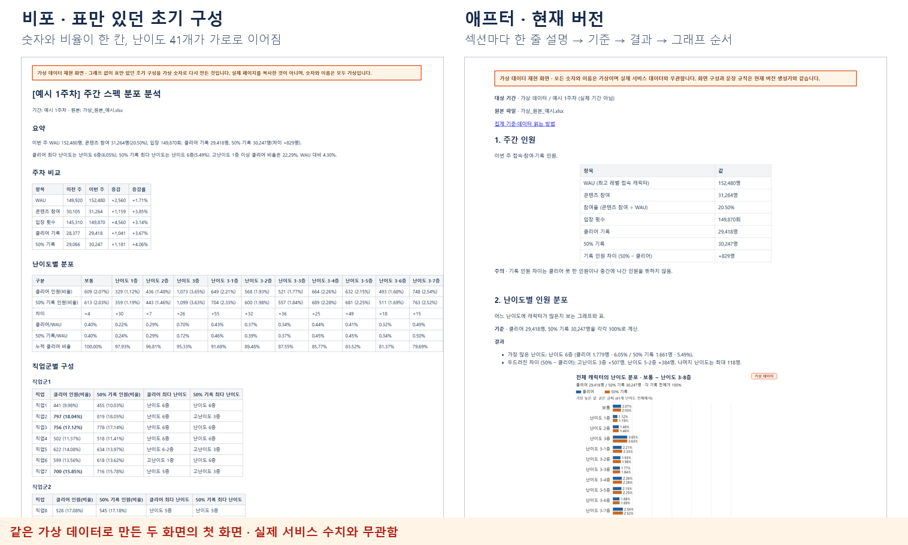
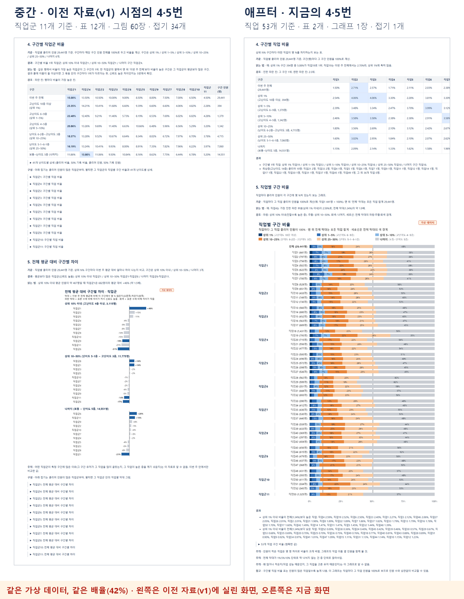
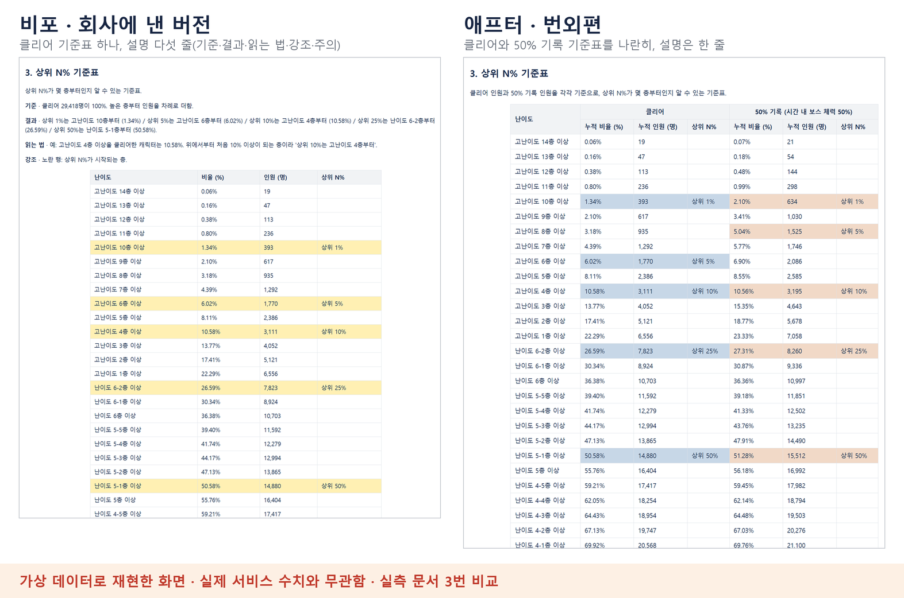

- PERIOD
- 로그 요청부터 자동화까지 약 2개월 · AI 작업 약 열흘(실작업 7일)
- ROLE
- 로그 설계와 협업 요청, AI 지시와 최종 판단
- AI
- Claude 제작 · Codex, 제미나이 4 아르곤 검수
- OUTPUT
- 원본 엑셀 → 몇 초 만에 표 7개·그래프 4장 페이지, 게시·대조까지 자동
이 페이지의 화면은 모두 가상 데이터로 재현한 화면입니다. 숫자와 이름은 실제 서비스 수치와 무관합니다.
PROBLEM
측정 데이터가 없던 콘텐츠
높은 난이도를 깰수록 스펙이 높다는 뜻인 콘텐츠입니다. 그런데 측정 데이터가 없었습니다. 상위권 플레이어가 스펙만 확인하고 클리어 전에 나가는 경우도 있었습니다. 그래서 클리어 로그만으로는 분포가 부정확할 수 있었습니다.
| 활용 | 콘텐츠 개발자가 목표 이용자 범위와 개발 난이도를 판단할 때 참고합니다. |
| 로그 설계 | 클리어하지 않아도 남는 '50% 기록'(제한 시간 절반 안에 보스 체력 50%) 로그를 새로 넣었습니다. |
| 협업 경로 | 사내에 정해진 요청 경로가 없었습니다. 그래서 PM에게 경로를 묻고, 계열사 DB 조직과 프로그램팀에 직접 요청했습니다. 해외 현지 DB와는 PM과 사내 통역을 거쳐 협의했습니다. |
| 기준 정리 | 3~4년 전 기준이던 DB의 난이도·직업 정보를 최신 체계로 바꾸는 데 참여했습니다. |
| 남은 것 | 팀이 DB 조직에 로그를 요청할 경로가 생겼습니다. 요청 경로를 정리한 팀 공유 문서는 작성 예정입니다. |
BEFORE · AFTER
같은 데이터, 읽히는 자료로

| 같은 질문 | "상위 10%는 어느 난이도부터인가?" |
| 비포 | 누적 비율 행을 눈으로 따라가며 10%를 넘는 칸을 찾아야 했습니다. |
| 애프터 | 결과 줄에 "상위 10%는 고난이도 4층부터 (10.58%)"가 바로 있습니다. (가상 데이터 값) |
HOW
AI에게 고칠 곳보다 이유를 줬습니다
AI의 첫 결과물은 숫자는 정확했지만 표만 길게 이어졌습니다. 그래서 데이터 전문가가 아닌 기획자는 읽기 어려웠습니다.
- 독자를 먼저 정함 데이터를 뽑는 담당자와 자료를 읽는 기획자로 나누고, 기준 문서도 둘로 나눴습니다.
- 원칙으로 지시 "정리는 깔끔한데 왜 읽기 어려운가"를 따져, 한 문단에는 정보 한 종류만 담고 표는 읽는 사람의 사고 흐름 순서로 놓게 했습니다.
- 빼기는 추천부터 삭제나 큰 구조 변경은 AI가 추천과 이유를 먼저 냈습니다. 결정은 제가 했습니다.
- 독자의 말로 통계 용어와 판단어 대신 사람 수 예시와 사실로 쓰게 했습니다.
- 오독 막기 문서에 '이 자료만으로 판단하지 않는 것'과 '해석 주의'를 따로 두었습니다. 예: 어떤 직업군이 특정 구간에 많은 이유는 이 자료로 알 수 없음.
| AI가 처음 쓴 문장 | 고친 문장 |
|---|---|
| 전체보다 뚜렷이 많은 직업군 | 평균보다 많은 직업군(신뢰도 높음) '뚜렷이'는 기준이 없는 판단어 |
| 파란 막대 = 우연으로 보기 어려운 차이 · 회색 = 인원이 적어 우연일 수 있음 | 파란 막대는 신뢰도가 높음, 회색 막대는 표본 수에 비해 차이가 작음. '우연'은 통계 용어 |
| 직업군1 +46%: 이번 주 전체 비율대로라면 상위 10% 이내에 약 467명일 텐데 실제로는 682명 (약 1.5배). | 상위 10% 이내 평균 인원이 약 467명일 때 직업군1은 682명이라 평균 대비 +46% (약 1.5배). 조건 → 값 → 결론 순서 · 이름과 숫자는 가상 데이터 값 |
REVIEW · RULES
여러 AI로 검수하고, 고친 기준은 규칙으로
| 역할 | Claude가 만들고 검수 의견의 타당성을 정리했습니다. 검수는 Codex와 제미나이 4 아르곤이 맡았습니다. 최종 결정은 제가 했습니다. 선배 기획자의 검수도 거쳤습니다. |
| 검수 AI 개선 | 첫 검수는 제안 목록을 되묻는 수준이었습니다. 검수 AI에게 평가서와 검수 틀(요청서, 사전 지식, 확인 범위, 답변 형식)을 줬습니다. 그러자 전수 대조와 모순 찾기까지 했습니다. 마지막 회차에는 원본과 대조해 '게시 가능'을 판정했습니다. |
| 걸러낸 것 | 검수 AI는 정확성을 위해 단서와 통계 용어를 늘리는 쪽으로 제안하기도 했습니다. 독자를 헷갈리게 하는 문구는 제가 걸러내고, '곁가지 문구 금지' 같은 규칙으로 만들었습니다. |
| 규칙화 | 같은 지적을 두 번 하지 않도록 고친 기준을 세 곳에 남겼습니다. 다음 담당자와 다른 AI가 읽는 지시문, 같은 작업을 다시 여는 AI의 기억, 모든 대화와 프로젝트에 적용되는 전역 규칙입니다. |
REDESIGN
선배와 만든 시안으로 다시 설계했습니다
첫 판을 만든 뒤 이틀 동안 실측 페이지와 기준 문서를 거의 새로 설계했습니다. 많이 보여 주기보다, 꼭 필요한 것을 쉽게 보여 주는 쪽으로 바꿨습니다.

| 계기 | 만든 저도 헷갈린 '평균 대비' 지표, 선배와 함께 엑셀로 만든 그래프 시안, 선배의 "섹션마다 한 줄 설명, 빙빙 돌려 말하지 말 것"이 계기였습니다. |
| 바꾼 것 | 직업군 11개 기준의 표 12개와 그림 60장을, 직업 53개 기준의 표 1개와 그래프 1장으로 바꿨습니다. 정확한 값은 접기 표 하나에 두었습니다. |
| 맡기고 검토 | 퇴근하며 AI에게 일을 통째로 맡기고, 다음 날 결과를 직접 읽어 바로잡았습니다. 그래프로 요청한 부분이 표로 나온 일은 "시안의 형태는 바꾸지 않고, 바꾸고 싶으면 따로 묻는다"는 규칙으로 남겼습니다. |
| 결과 | 그림 63장은 4장, 접기 35개는 3개, 표 17개는 7개로 줄었습니다. 이틀 만에 1~3주차 페이지와 기준 문서, 인수인계 문서까지 모두 반영했습니다. |
BONUS · 번외편
포트폴리오용으로 한 번 더 덜어냈습니다
회사에 낸 실측 문서와 기준 문서를 개인 포트폴리오용 번외편으로 다시 다듬었습니다. 바꿀 곳과 이유는 제가 정했습니다.

| 실측 3번 | 클리어와 50% 기록의 기준표를 나란히 놓았습니다. 조사 목적이 두 기록의 차이를 보는 것이고, 상위 5%에서 2층 차이가 나기 때문입니다. |
| 실측 2·4·5번 | 설명과 강조만 남기고 결과는 표로 바꿨습니다. 4번 최상층은 직업·인원 표로, 5번은 상위 1% 이내 비율 순위 표로 보여 줍니다. |
| 실측 6번 | 접지 않고 펼쳤습니다. 직업별 합계와 전체 인원의 차이로 직업을 바꾼 캐릭터가 얼마나 되는지 읽는 예시를 넣었습니다. |
| 기준 문서 | 실측 문서만 읽어도 되도록 읽는 법과 원본 시트 설명을 빼고, 요청 쪽만 남겼습니다. |
| 공통 | 사족이 된 주의·읽는 법·참고 줄을 뺐습니다. |
AUTOMATION · RESULT
원본만 넣으면 매주 나오는 자료
원본 엑셀 → 원본 확인 → 집계 → 그래프 4장 → 페이지 조립(표 7개) → 자체 검증 → 게시 → 게시 후 대조. 숫자를 추측해 채우지 않습니다. 원본 합계가 맞지 않으면 억지로 맞추지 않고 그대로 표시합니다.

- 데이터의 의미 요청 배경대로 클리어 기록과 50% 기록 사이에 의미 있는 차이를 확인했습니다.
- 새 발견 한 직업군에서 인원이 가장 많은 직업보다 다른 직업의 상위권 비중이 더 높았습니다.
- 활용 기획팀 전체에 공유했고, 밸런스·스킬 파트도 관심 있게 보고 있습니다.
- 페이지 그림이 63장에서 4장으로, 접기가 35개에서 3개로 줄었습니다. 매주 원본을 넣으면 몇 초 만에 만들어집니다.
- 인수인계 지시문 하나를 AI에 붙여 넣고 원본만 주면, 다음 담당자나 다른 AI도 같은 품질로 만듭니다.
- 확대 팀장 판단으로 서비스 중인 전 권역으로 넓힐 예정입니다. 지금은 1개 권역입니다.